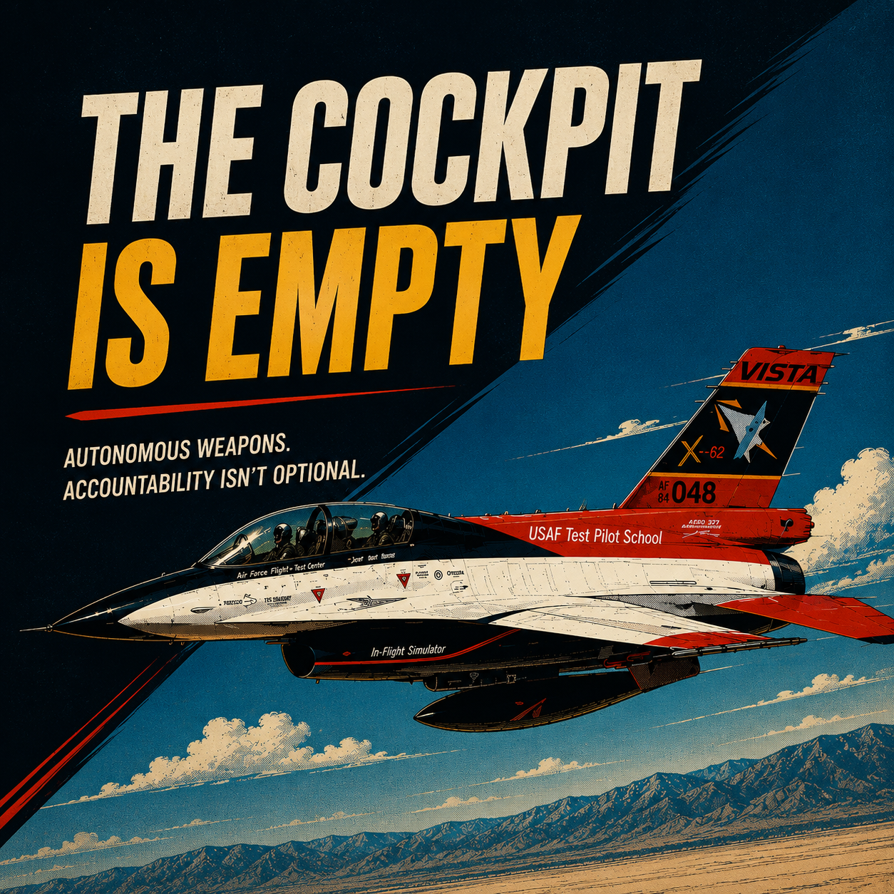

Who Is Responsible When an AI Kills?
Technical Writing | Individual | Spring 2026
Overview
ENGR 3100 magazine piece on autonomous weapons and the accountability gap: when a machine makes a lethal call, who answers? The argument sits at the intersection of aerospace systems, machine learning, humanitarian law, and geopolitics.
What I Examined
01 | Technical Research
SourcesSynthesized DARPA reports, UN findings, ICRC policy, and Human Rights Watch material for a broad engineering audience.
02 | Accountability Gap
ArgumentHow autonomous targeting breaks the legal responsibility chain, and why neural-network opacity makes that gap structural.
03 | Case Studies
EvidenceX-62A VISTA (Sep 2023) and Kargu-2 in Libya as cases where capability outran governance.
04 | Geopolitical Analysis
PolicyMapped US, China, and Russia positions in treaty talks: builders of autonomy blocking binding rules.
05 | Web Publication
DeliverableBuilt a magazine-style web version alongside print: layout, type, and hierarchy.
Scope | ENGR 3100
Technical writing for a public audience. Research synthesis and clear argument, not a legal brief or weapons design study.
Article Scope & Key Parameters
>> Key Statistics
>> Article Structure
Technical Documentation
Themes
Takeaway
Published magazine article plus web edition: technical synthesis on autonomous weapons and the accountability gap for a public engineering audience.
Reflection
The engineering problem of autonomy is solvable. The accountability problem is not, at least not yet. Capable systems and responsible systems are different goals, and the gap between them is still widening.